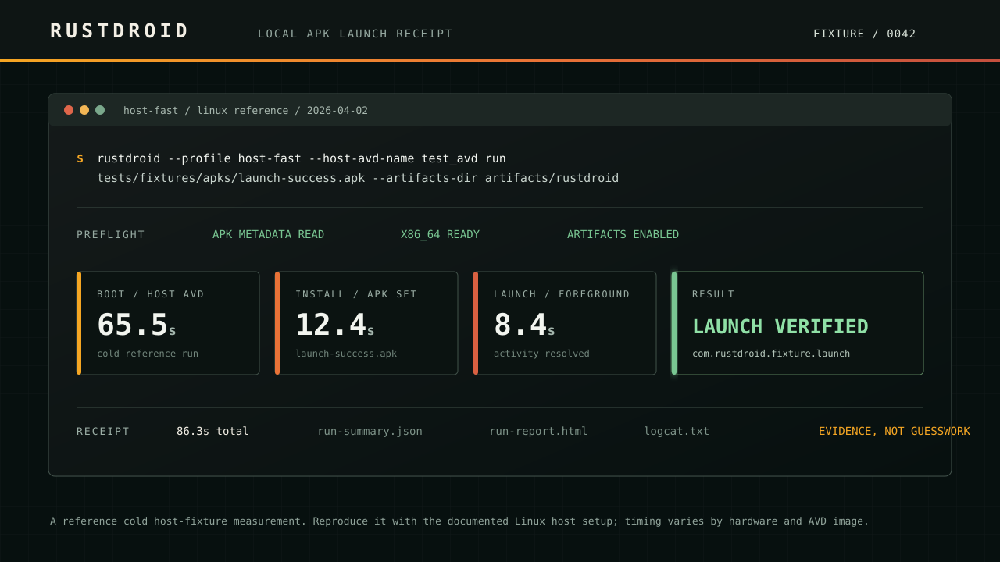
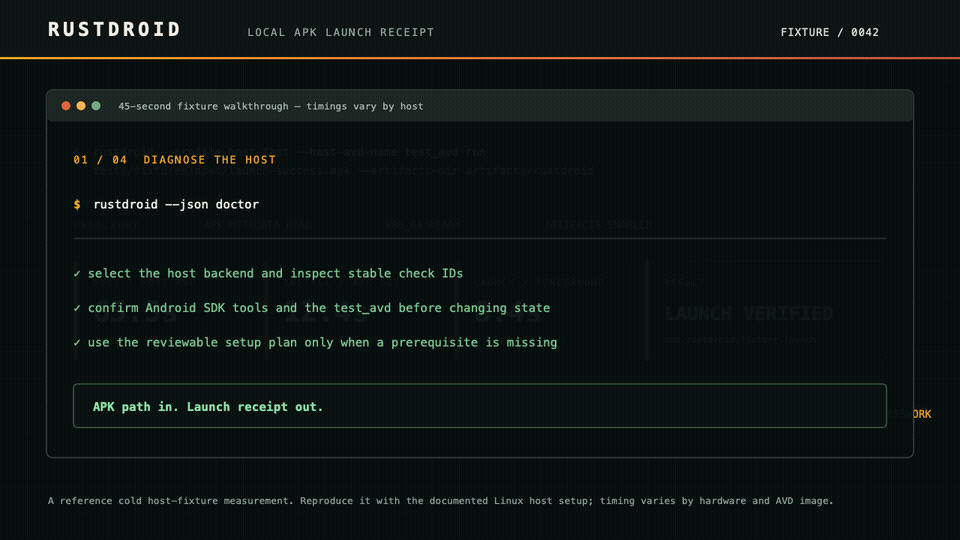

Local Android APK loop / Linux-first
APK path in.
Launch receipt out.
RustDroid boots or reuses an emulator, installs your APK, observes its launch, and leaves an evidence trail you can inspect locally or upload to CI.
- Host emulator fast path
- APK · split APK · .apks · .xapk
- JSON · HTML · JUnit receipts
host-fast / reference fixture
run #0042
rustdroid --profile host-fast run
tests/fixtures/apks/launch-success.apk
PRE-FLIGHTAPK metadata readx86_64 readyartifacts enabled
One useful answer, not another dashboard
Where did the APK loop break?
RustDroid makes the daily device hand-off explicit: inspect the input, prepare the runtime, install, launch, then keep the facts.
- 01
Inspect
Resolve package, activity, ABI, split sets, and archives before the emulator costs you time.
- 02
Prepare
Boot or reuse an AVD on the host fast path. Use Docker when containment matters more.
- 03
Launch
Install the APK, resolve the launch activity, and observe the app in the foreground.
- 04
Keep proof
Write logs and a portable receipt instead of asking a teammate to reproduce a green check.

Reference cold host-fixture run. Timings are context, not a promise; reproduce on your own supported host.

Open the guided fixture walkthrough ↗A receipt is more useful than a pass/fail dot
Useful to humans.
Stable for machines.
A completed run can leave a versioned JSON receipt, a reviewable HTML report, JUnit for CI, Markdown, and logcat evidence. Failures retain the stage that failed: emulator, ADB, install, launch, or capture.
Read the receipt schema- run-summary.json
- automation and dashboards
- run-report.html
- quick human review
- junit.xml
- CI-native failure signal
- logcat.txt
- launch and crash context
No private application required
Try a real, checked-in fixture first.
Use the signed launch fixture to validate your Linux host, Android SDK, AVD, and receipt path before connecting a private app.
fixture / launch-success.apk
$ rustdroid \
--profile host-fast \
--host-avd-name test_avd \
run tests/fixtures/apks/launch-success.apk \
--duration-secs 2 --keep-alive false \
--artifacts-dir artifacts/rustdroid-demoEXPECTED RESULTlaunch verified + receipt artifactsSee the documented walkthrough
Bring the build tool you already use
One receipt contract. Three public sources.
The local APK loop, with a paper trail